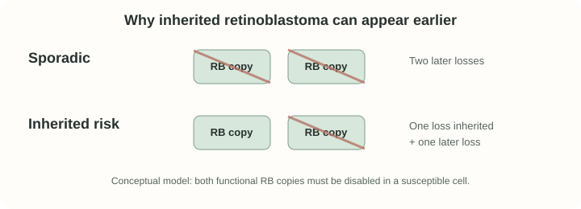
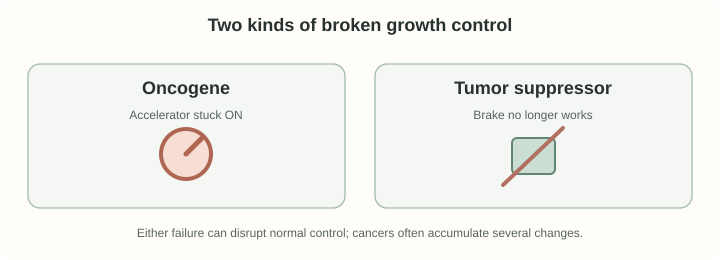

Cancer researchers return to the genes inside cells
By the summer of 1976, work by Harold Varmus and Michael Bishop had established a radically new idea. The normal cell contained proto-oncogenes—genes involved in its ordinary growth and signaling. When these genes were abnormally activated, they could become oncogenes and help drive malignancy.
This offered a possible explanation for many kinds of cancer-causing influence. A chemical in cigarette smoke, radiation, or a virus could ultimately disturb the same internal genetic machinery. Even a cancer developing without a known external exposure might involve changes in similar genes.
Yet a large gap remained between experiments on chicken viruses and the tumors found in human patients. Could scientists actually find specific genetic abnormalities in real human cancers? This chapter describes two complementary ways they learned to do so.
Two ways to look for a gene
Mukherjee distinguishes between two scientific perspectives.
The structural approach asks where a gene is located physically—on which chromosome or in which segment of DNA. It is like looking for a house by studying a map.
The functional or hereditary approach asks how a characteristic is transmitted and expressed. It is like identifying an unknown machine from the effects it produces, even before seeing the machine itself.
Both approaches can reveal otherwise hidden genetic information. In this chapter, Janet Rowley follows the physical structures of chromosomes, while Alfred Knudson studies how a childhood cancer behaves across families and ages.
Janet Rowley studies an old disease with new eyes
Rowley was a physician and chromosome researcher who specialized in examining stained cells. While cancer science increasingly favored molecular experiments, she continued studying the visible patterns of chromosomes under the microscope.
Her chosen disease was chronic myelogenous leukemia (CML)—a form of blood cancer connected historically with the very early descriptions of leukemia in the book.
In the late 1950s, researchers Peter Nowell and David Hungerford had observed an odd feature of CML cells: one copy of chromosome 22 was consistently smaller than expected. They called it the Philadelphia chromosome, after the city in which it was identified.
But they did not know why it was shorter or what happened to the missing material.
The detective work behind the Philadelphia chromosome
Rowley examined detailed images of chromosomes, arranging and comparing them with remarkable patience. She looked for a pattern that could explain where the missing piece of chromosome 22 had gone.
She discovered that this was not a simple deletion in which genetic material disappeared. Pieces of chromosomes 9 and 22 had exchanged places. The rearrangement is called a chromosomal translocation.
Think of two books. A chapter is torn from Book A and inserted into Book B, while a passage from Book B is inserted into Book A. Both books now contain pieces that were originally in different places. The total amount of writing may be similar, but the arrangements—and potentially the meaning—have changed.
That is what a translocation can do to genetic instructions.
Why a recurrent translocation was so important
Earlier pathologists had noticed that cancer cells often had disorganized chromosomes. But Rowley's finding was more precise. In patient after patient with CML, the same specific chromosomal rearrangement appeared.
This suggested that cancer did not consist only of random genetic chaos. Particular cancers could possess characteristic genetic changes, changes tied to the disease's biology.
A rearrangement could potentially place genes in new settings or fuse parts of genes into a new instruction. Such a fused gene is sometimes called a chimeric or fusion gene.
Rowley did not initially know the precise molecular product of the CML rearrangement. Her major achievement was showing a specific, recurring structural abnormality in a human cancer. Its significance for targeted treatment would become clearer later in the book.
The second detective: Alfred Knudson
At about the same time, Alfred Knudson was approaching the genetic puzzle from a different direction. He wanted to learn about cancer genes from the pattern of disease in children.
He chose retinoblastoma, a rare cancer of the developing retina. The choice connected him with an old observation by Brazilian physician Hilário de Gouvêa: retinoblastoma sometimes appeared repeatedly in the same family.
Knudson did not begin by extracting the relevant gene from DNA. Instead, he studied the ages at which children developed the disease and compared families with inherited risk against cases with no obvious family history.
This may seem like an indirect approach, but it allowed him to make one of the most influential predictions in cancer genetics.

Retinoblastoma: Two patterns of disease
In the inherited form of retinoblastoma, children often developed tumors very early in life, and tumors could affect both eyes. In cases without an inherited predisposition, children generally developed the disease later and often in one eye.
Knudson examined clinical records and found that the age-of-onset patterns were strikingly different. In the book's historical data, inherited cases appeared especially early, while sporadic cases tended to arise after a longer delay.
Why would the same cancer appear at different speeds? Knudson thought the timing could reveal how many unlikely genetic events a cell had to experience before it became malignant.
The two-hit hypothesis explained simply
Humans ordinarily carry two copies of many genes, one inherited from each parent. Knudson proposed that a particular protective gene, later called RB, helps prevent inappropriate cell division. Cancer develops when both functional copies are lost in a susceptible retinal cell.
Consider two protective locks on a door. If either lock is still working, the door remains secured. To open it unexpectedly, both locks must fail.
In a child without an inherited defect, both locks begin intact. The same cell has to acquire two separate damaging changes. That can take time.
In a child who inherits one defective copy, one lock is already broken in every relevant cell. Only one additional damaging event is required in a retinal cell. This can make disease appear earlier and in more than one location.
This idea became known as the two-hit hypothesis.

A concrete comparison
| Question | Inherited predisposition | Sporadic case |
|---|---|---|
| Starting condition | One defective RB copy is already present | Both RB copies start functional |
| Additional events needed in a retinal cell | Typically one more inactivating event | Typically two inactivating events |
| Usual timing in the historical pattern | Earlier childhood | Later childhood |
| Why multiple tumors may occur | Many retinal cells begin one step closer | Two events must occur in the same susceptible cell |
The two-hit theory did not mean every child with an inherited alteration inevitably develops the same cancer at the same age. It offered a compelling explanation for the differences observed across patient groups.
Also, inheriting a predisposition is not the same as inheriting a completed cancer. The additional genetic change still matters.
Why was this theory surprising?
The proto-oncogene discoveries had shown that one activated copy of certain genes could push a cell toward excess growth. Src, for example, behaved like a permanently activated growth signal.
Knudson's RB gene seemed to work in the opposite direction. Cancer arose not because RB became overly active but because its protective function disappeared.
This meant that cancer genes did not all operate in one way. A cell could become abnormal by receiving excessive instructions to grow, or by losing instructions to stop growing.
Both mechanisms could lead to the same visible result: uncontrolled cell proliferation.
Oncogenes are accelerators; tumor suppressors are brakes
The easiest analogy is a car.
An oncogene is like an accelerator stuck down. The engine receives the instruction to move even when the driver no longer wants to accelerate.
A tumor suppressor gene, such as RB, is like a brake. Under normal conditions it helps restrain the cell's progression through division. If the brakes fail, the cell becomes less able to respond to stop signals.
| Genetic class | Normal role | Cancer-associated failure |
|---|---|---|
| Proto-oncogene | Promotes growth when appropriate | Abnormally activated into an oncogene |
| Tumor suppressor | Restrains inappropriate growth | Inactivated or functionally disabled |
A car with a stuck accelerator or missing brakes is dangerous. A car with both problems is even harder to control. Human cancers can accumulate alterations affecting both types of genes.


Knudson sees an invisible gene through its effects
Knudson's most impressive achievement was that he inferred the existence and basic behavior of RB without first identifying its DNA sequence. He treated patterns of onset and inheritance as clues to a hidden mechanism.
The chapter's title, “The Wind in the Trees,” comes from this idea. You cannot directly see the wind, but you can infer its direction and force by watching the trees move. Similarly, Knudson observed when tumors appeared and used the statistical pattern to reason about the unseen gene responsible.
This is a different kind of scientific vision from Rowley's microscope. One researcher used physical evidence; the other used probability and inherited patterns. Both led toward a genetic explanation for human cancer.
Two lines of research converge on a general theory
By the end of the 1970s, scientists could begin to imagine cancer as the interaction of two broad classes of genetic failure:
- Growth-promoting genes become excessively active.
- Growth-restraining genes lose their ability to stop the cell.
Rowley's discovery showed that identifiable chromosomal rearrangements could mark real human cancers. Knudson's theory suggested a protective gene that had to be disabled. Varmus and Bishop had already shown that activated growth genes were derived from normal cellular genes.
Together, these ideas helped replace the vague image of a cancer cell as simply disordered tissue with the more precise image of a cell whose internal regulatory system is damaged.
Important limitations of these discoveries
Rowley's chromosomes did not immediately explain how the translocation changed cell behavior. Knudson's statistics did not directly isolate the RB gene. Neither discovery revealed how many genetic changes were required to produce every form of cancer.
The theories were powerful partly because they made predictions that could be tested later. A specific gene associated with CML should eventually be identifiable. The RB gene inferred from patient patterns should eventually be found and shown to be damaged in tumors.
A hypothesis can be impressive without yet being fully proved. The next chapter follows the experiments that would provide much more direct molecular confirmation.
Important terms and people to remember
Philadelphia chromosome: An abnormal chromosome seen in CML, associated with a rearrangement of chromosomes 9 and 22.
Translocation: A structural chromosome change in which pieces are moved or exchanged.
Fusion gene: A gene created when parts of two formerly separate genes become joined.
Retinoblastoma: A childhood eye cancer used to study inherited genetic predisposition.
Two-hit hypothesis: The theory that both functional copies of a particular protective gene need to be disabled in the same cell for certain cancers to develop.
Janet Rowley revealed a recurring structural change. Alfred Knudson inferred the behavior of a protective cancer gene from clinical patterns.
The deeper meaning and final takeaway
The chapter demonstrates that science can discover a hidden cause in more than one way. A visible chromosome abnormality and an invisible statistical pattern can both reveal something true about the same underlying genetic system.
The concept of cancer now becomes sharper: malignant growth is not simply a cell that divides too much. It may be a cell with accelerator signals stuck on and protective brakes disabled.
Remember the progression: Varmus and Bishop establish proto-oncogenes → Rowley discovers a characteristic chromosome translocation in CML → Knudson studies inherited and sporadic retinoblastoma → his two-hit theory predicts tumor suppressors → researchers begin to distinguish activated oncogenes from lost growth restraints. The next step is to isolate these genes directly and test the predictions.